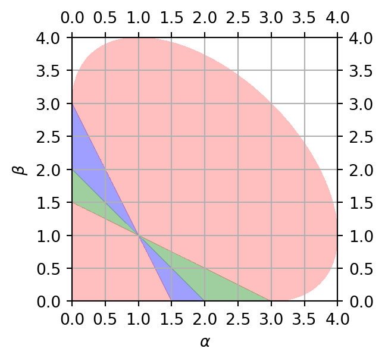

Xuefeng Xu
Home
Research
Teaching
Blog
CV
Misc.
Categories
All
(2)
Python
(1)
Statistics
(2)
Order By
Default
Date - Oldest
Date - Newest
Power Transform
Statistics
Python
Power transforms are parametric methods that convert data into a Gaussian-like distribution. Two widely used transformations in this category are the Box-Cox
(Box and Cox 1964…
Apr 14, 2025

Monotone Piecewise Cubic Interpolation
Statistics
Piecewise Cubic Hermite Interpolating Polynomial (PCHIP) is a cubic spline-based interpolation method designed to preserve monotonicity. See MATLAB or SciPy for the…
Mar 13, 2025
No matching items